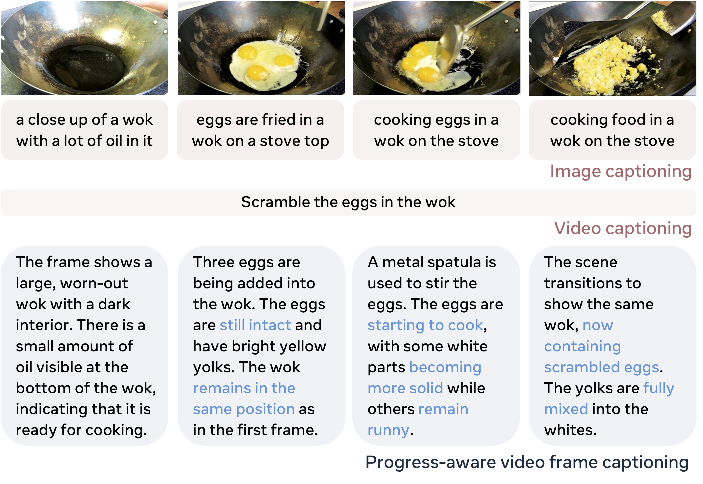
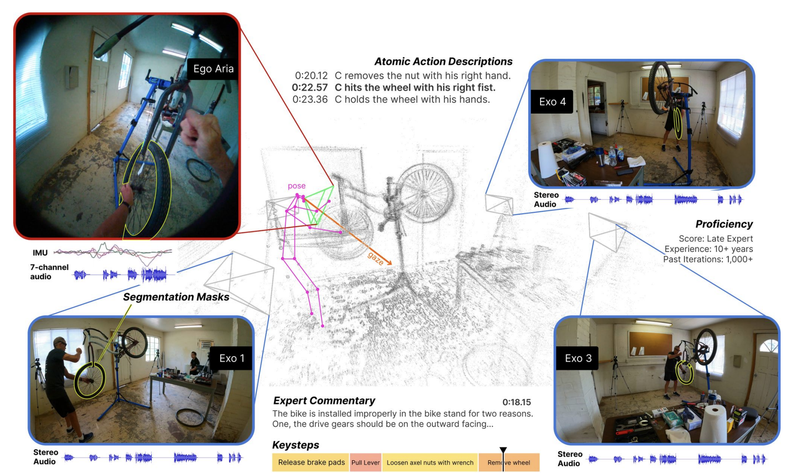
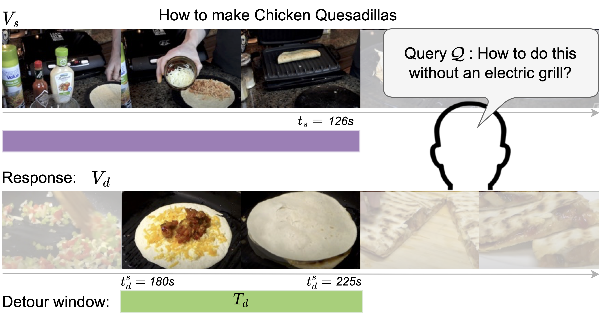

Hi, I am Zihui Xue (薛子慧), a 4th-year Ph.D. student at UT Austin, advised by Prof. Kristen Grauman. I am also a visiting researcher at FAIR, Meta AI.
Previously, I'm fortunate to work with Prof. Hang Zhao on multimodal learning. I obtained my bachelor's degree from Fudan University in 2020.
My research interests lie in video understanding and multimodal learning.
[Aug. 2022] Spent a wonderful summer interning at FAIR, Meta AI, working with Lorenzo Torresani üòä
Projects
Video

Progress-Aware Video Frame Captioning
Zihui Xue,
Joungbin An,
Xitong Yang,
Kristen Grauman
arXiv, 2024[paper][webpage] A video-language model that advances the temporal precision in video captioning.
HOI-Swap: Swapping Objects in Videos with Hand-Object Interaction Awareness
Zihui Xue,
Mi Luo,
Changan Chen,
Kristen Grauman
NeurIPS, 2024[paper][webpage] Seamlessly swap the in-contact object in videos
Learning Object State Changes in Videos: An Open-World Perspective
Zihui Xue,
Kumar Ashutosh,
Kristen Grauman
CVPR, 2024[paper][webpage] Localization of object state change from videos in the open world

Ego-Exo4D: Understanding Skilled Human Activity from First-and Third-Person Perspectives
Kristen Grauman, Andrew Westbury, Lorenzo Torresani, Kris Kitani, Jitendra Malik, ..., Zihui Xue, et al.
CVPR, 2024 (Oral) [paper][webpage] [blog] A diverse, large-scale multimodal multiview video dataset and benchmark challenge

Detours for Navigating Instructional Videos
Kumar Ashutosh, Zihui Xue, Tushar Nagarajan, Kristen Grauman
CVPR, 2024 (Highlight) [paper] The video detours problem for navigating instructional videos
Learning Fine-grained View-Invariant Representations from Unpaired Ego-Exo Videos via Temporal Alignment
Zihui Xue,
Kristen Grauman
NeurIPS, 2023[paper][webpage] Fine-grained ego-exo view-invariant features -> temporally align two videos from diverse viewpoints
Egocentric Video Task Translation
Zihui Xue,
Yale Song,
Kristen Grauman,
Lorenzo Torresani
CVPR 2023 (Hightlight)[paper][webpage] Hollistic egocentric perception for a set of diverse video tasks
Multimodal perception and self-supervised learning
The Modality Focusing Hypothesis: Towards Understanding Crossmodal Knowledge Distillation
Zihui Xue*,
Zhengqi Gao*
Sucheng Ren*,
Hang Zhao
ICLR, 2023 (top-5%)[paper][webpage] When is crossmodal knowledge distillation helpful?
Dynamic Multimodal Fusion
Zihui Xue,
Radu Marculescu
CVPR MULA workshop, 2023[paper] Adaptively fuse multimodal data and generate data-dependent forward paths during inference time.
What Makes Multi-Modal Learning Better than Single (Provably)
Yu Huang,
Chenzhuang Du,
Zihui Xue,
Xuanyao Chen,
Hang Zhao,
Longbo Huang
NeurIPS, 2021[paper]
Can multimodal learning provably perform better than unimodal?
Multimodal Knowledge Expansion
Zihui Xue,
Sucheng Ren,
Zhengqi Gao,
Hang Zhao
ICCV, 2021
[paper][webpage]
A knowledge distillation-based framework to effectively utilize multimodal data without requiring labels.
On Feature Decorrelation in Self-Supervised Learning
Tianyu Hua,
Wenxiao Wang,
Zihui Xue,
Sucheng Ren,
Yue Wang,
Hang Zhao
ICCV, 2021 (Oral, Acceptance Rate 3.0%)[paper][webpage]
Reveal the connection between model collapse and feature correlations!
Efficient Deep Learning
SUGAR: Efficient Subgraph-level Training via Resource-aware Graph Partitioning
Zihui Xue,
Yuedong Yang,
Mengtian Yang,
Radu Marculescu
IEEE Transactions on Computers, 2023
[paper]
An efficient GNN training framework that accounts for resource constraints.
Anytime Depth Estimation with Limited Sensing and Computation Capabilities on Mobile Devices
Yuedong Yang,
Zihui Xue,
Radu Marculescu
CoRL, 2021
[paper]
Anytime Depth Estimation with energy-saving 2D LiDARs and monocular cameras.
{kind=link}